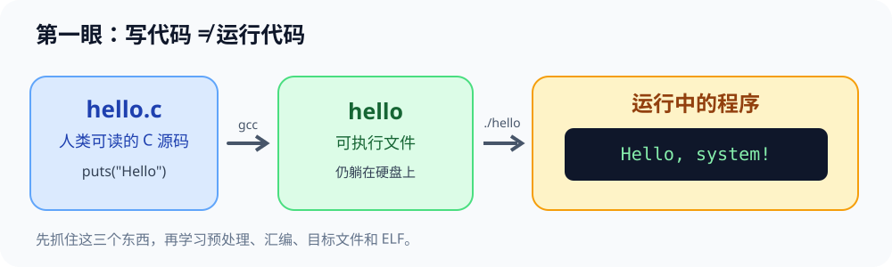
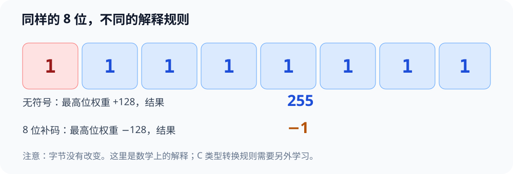
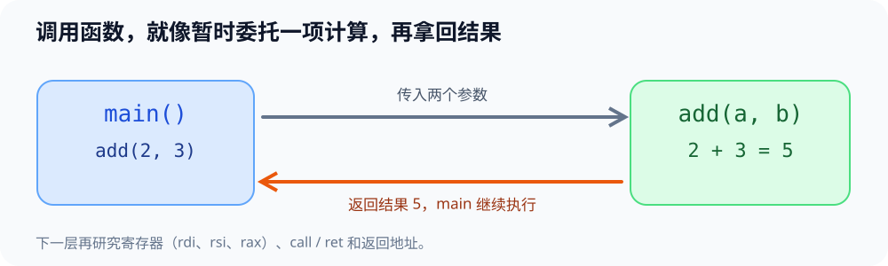

先玩再学 · 计算机系统实验室
先通过点击、预测和单步认识一个现象，再回到 WSL 亲手运行 C 程序。这里的动画与寄存器是教学模拟，不替代真实计算机运行证据。
无需网络 · 无外部依赖 · 不保存/上传你的输入
00 · 从 C 文件到屏幕上的一句话

先预测：生成可执行文件后，终端就会自动打印 Hello 吗？
先选择一个答案。
点“下一步”拆开构建流水线
这里将 GCC 分成预处理、编译、汇编、链接和运行：每步都能停下来观察。运行是构建后的另一个动作。
拿到真正的 WSL 输出
mkdir -p ~/cs-system/tiny0 && cd ~/cs-system/tiny0
cat > hello.c <<'EOF'
#include <stdio.h>
int main(void) {
puts("Hello, system!");
return 0;
}
EOF
gcc hello.c -o hello && ./hello
观察目标：最后出现 Hello, system!。改一句文字以后再编译，比较新旧执行文件的输出。
01 · 一个字节里的 8 个开关
点击任何一个方格，就会在 0 和 1 之间切换。左边第一格是最高位；位没有“自带”正负数含义，含义来自你选的解释规则。

按 8 位无符号读255位权 128, 64, …, 1
按 8 位补码读-1最高位权 -128
先猜，再自己改
把位模式改为 10000000，补码值会是几？
先猜一个，再点 0x80 验证。
现实 C 程序里类型与转换有更详细的约束，本图只演示数学意义上的 8 位补码。继续到 真实 C 微实验。
02 · 观察一次 add(a, b) 的寄存器状态

在 Linux x86-64 常见的 System V ABI 下，前两个整数参数常经 rdi / rsi 传入，整数返回值通常放 rax。这里仅用 3 条简化的示意指令展示计算过程。
rdi · 第一个参数2
rsi · 第二个参数3
rax · 返回值—
① mov rax, rdi （把 a 放到 rax）
② add rax, rsi （把 b 加到 rax）
③ ret （返回调用者）
在真实 WSL 中验证
cat > add.c <<'EOF'
#include <stdio.h>
long add(long a, long b) { return a + b; }
int main(void) {
printf("%ld\n", add(2, 3));
return 0;
}
EOF
gcc -O0 -g add.c -o add && ./add
预期得到 5。这里的模拟指令不保证与你本机 GCC 生成的实际汇编一字不差；进阶再运行 GDB/objdump 观察真实机器代码。